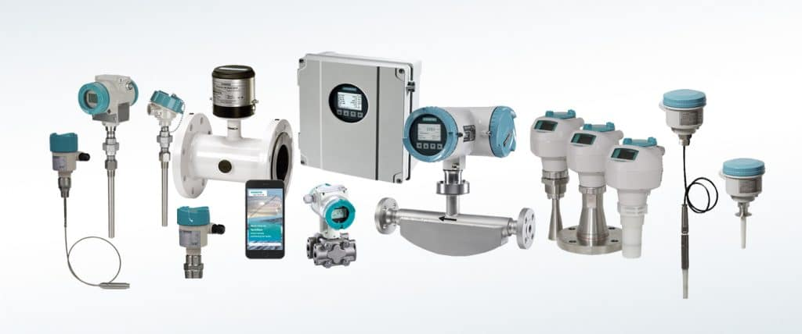

Water treatment instruments are essential tools used to monitor and control the various processes involved in water treatment. These instruments ensure optimal water quality by accurately measuring parameters like pH, turbidity, chlorine levels, and more. Explore the features and applications of these advanced instruments below.
Overview
Water treatment instruments are critical in ensuring the efficiency and effectiveness of water treatment processes. These instruments include devices like pH meters, turbidity meters, chlorine analyzers, and conductivity sensors, which are used to monitor the water's quality throughout the treatment stages. By measuring parameters such as chemical composition and physical properties, they help optimize the water treatment process.
Features
- Accurate Monitoring: Provides precise measurements for water quality parameters like pH, turbidity, chlorine levels, and more.
- Real-Time Data: Instantaneous readings that allow for real-time monitoring and adjustments in the water treatment process.
- Durable & Reliable: Built for long-term use, these instruments are designed to withstand harsh environments.
- Easy Integration: Can be easily integrated into automated water treatment systems for streamlined operation.
- Wide Range of Measurements: Capable of measuring a variety of parameters to ensure comprehensive water quality monitoring.
Process
The water treatment process involves the use of various instruments at different stages:
- Pre-Treatment: Instruments like turbidity meters monitor the quality of incoming water.
- Filtration: pH meters and conductivity sensors ensure the proper chemical composition during filtration.
- Disinfection: Chlorine analyzers measure and control chlorine levels to disinfect water.
- Post-Treatment: Instruments provide final water quality readings before distribution.

Applications
- Municipal Water Treatment: Used for monitoring and controlling water quality in municipal water plants.
- Industrial Water Treatment: Ensures efficient water usage in industries like pharmaceuticals, food processing, and manufacturing.
- Environmental Monitoring: Instruments are used for monitoring water quality in rivers, lakes, and oceans.
- Desalination Plants: Critical in ensuring the efficiency and safety of desalination processes.
- Agriculture: Used to monitor water quality for irrigation and livestock applications.